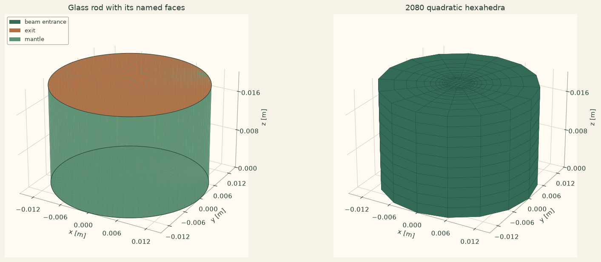

Docs › Examples › Laser beam absorbed in a silica glass rod
Heat transfer · 3D
Laser beam absorbed in a silica glass rod
A Gaussian laser beam travels along a fused-silica rod and is absorbed weakly; the glass heats up along the beam over ten seconds.
Run locally with OneSimulation. The example downloads are free. Running them requires an activated runtime. OneSimulation 1.0 · CPython 3.13 on macOS (Apple Silicon), Ubuntu 22.04 (x86-64), and Windows x64. Installation and activation · View pilot plans. Scope of the reference checks.

What it computes
OneSimulation reads the rod from a STEP file and solves the transient 3D heat equation with the volumetric heat source of the Beer-Lambert law and insulated faces. The script that builds the STEP file comes with the notebook.
What it checks
The stored heat grows by exactly the absorbed power of 4.3233 W (a constant 0.33 J offset is the 5e-5 smaller volume of the faceted mesh), and the temperature rise on the axis at z = 10 mm matches the exact infinite-medium solution of Carslaw and Jaeger within 0.8 % after 1 s and within 0.05 % from 2 s to 10 s (37.284 K against 37.286 K at 10 s).
Geometry
The notebook starts at the import of the CAD file laser_absorption_silica_rod.step: STEP (AP242), readable by any CAD program, with the names of the faces that the boundary conditions use. Put it next to the notebook.


The geometry script
The script laser_absorption_silica_rod_geometry.py builds the geometry with the CAD objects of OneSimulation and writes the file. Change a dimension there, run it, and run the notebook again.
"""Geometry of the OneSimulation example "Laser beam absorbed in a silica glass rod".
Builds the glass rod, 30 mm in diameter and 20 mm long, with the CAD objects of OneSimulation and
writes laser_absorption_silica_rod.step. The beam enters through the face entrance and leaves through
the face exit; the cylindrical face is named mantle.
"""
from onesim.cad.d3 import Cylinder
rod = Cylinder(radius=0.015, length=0.020)
f = rod.boundaries
rod = rod.grouped(entrance=f.bottom, exit=f.top, mantle=f.outer_wall)
rod.save("laser_absorption_silica_rod.step")The notebook
The complete notebook, cell by cell. Run it to produce the figures and the comparison printout.
A laser beam (power \(P=5\) W, Gaussian radius \(w=1.5\) mm) enters a glass rod along its axis. The glass absorbs the light weakly, \(\alpha=100\) 1/m, so the intensity decays slowly along the 20 mm rod (86 % is absorbed):
Fused silica: \(k=1.38\) W/(m K), \(\rho=2200\) kg/m³, \(c=740\) J/(kg K). All faces are taken as insulated for the 10 s of heating, so every absorbed joule stays in the rod.
| face | condition |
|---|---|
entrance, exit, mantle | insulated |
| initial state | 20 °C |
The rod (30 mm diameter) comes from the CAD file laser_absorption_silica_rod.step; the script laser_absorption_silica_rod_geometry.py builds it with the CAD objects of OneSimulation.
Reference. (1) Energy: the heat stored in the rod is \(P(1-e^{-\alpha L})\,t\). (2) Away from the end faces and the mantle the rod acts as an infinite medium. Each instant of the Gaussian source then spreads as a Gaussian, and the exponential axial profile grows by \(e^{\kappa\alpha^2s}\), so on the axis (Carslaw and Jaeger, Conduction of Heat in Solids, ch. 10)
import numpy as np
from onesim.cad.d2 import Plane
from onesim.cad.exchange import load
from onesim.materials import IsotropicSolid
from onesim.meshing import Geometric, disc_blocks, extrude, merge_blocks
from onesim.numerics import Numerics
from onesim.numerics.fem import FiniteElement, Lagrange
from onesim.numerics.linear import SparseDirect
from onesim.numerics.time import BDF, BackwardEuler
from onesim.physics.heat_transfer import HeatConduction, HeatFlux
from onesim.simulation import Problem, Simulation
from onesim.simulation.initial_conditions import InitialValue
from onesim.visualization import plots, theme
from scipy.integrate import quad
theme.set()Geometry and mesh
load returns the rod with its named faces. disc_blocks meshes the cross-section with a centre block, a ring out to twice the beam radius and an outer ring graded towards the beam; extrude carries the cells along the rod and geometry=rod binds them to its faces.
rod = load("laser_absorption_silica_rod.step")
faces = rod.boundaries
radius, length, beam = rod.size[0] / 2, rod.size[2], 0.0015
blocks = disc_blocks(
(0, 0),
(2 * beam, radius),
4,
(4, 8),
core=0.5,
gradings=(Geometric(4, ratio=1.0), Geometric(8, ratio=5.0)),
)
mesh = extrude(
merge_blocks(blocks, order=2), length, Geometric(10, ratio=1.0), geometry=rod
)
view = plots.Camera(elevation=25, azimuth=-60)
fig = plots.figure(1, 2, size=(14, 5.5))
plots.geometry(
rod,
selection={
"beam entrance": faces.entrance,
"exit": faces.exit,
"mantle": faces.mantle,
},
labels=False,
camera=view,
title="Glass rod with its named faces",
ax=fig[0],
)
plots.mesh(
mesh,
groups=("all",),
legend=False,
camera=view,
title=f"{mesh.cell_count} quadratic hexahedra",
ax=fig[1],
)
plots.show()Model
The Beer-Lambert source is the heating density of the model. Quadratic elements and the second-order BDF integrator with 40 steps of 0.25 s.
power, absorption, initial = 5.0, 100.0, 293.15
peak = 2 * power / (np.pi * beam**2)
silica = IsotropicSolid(
density=2200.0,
specific_heat_capacity=740.0,
thermal_conductivity=1.38,
youngs_modulus=7.3e10,
poisson_ratio=0.17,
thermal_expansion_coefficient=5.5e-7,
)
model = HeatConduction(
domain=rod.volume,
material=silica,
heating=lambda x, y, z: absorption
* peak
* np.exp(-2 * (x**2 + y**2) / beam**2 - absorption * z),
)
problem = Problem(
name="Laser absorption in silica",
geometry=rod,
physics=(model,),
boundary_conditions=(HeatFlux(boundary=faces.all, physics=model, value=0.0),),
initial_conditions=(InitialValue(model.temperature, initial),),
)
numerics = Numerics(
spatial=FiniteElement(element=Lagrange(order=2)),
linear_solver=SparseDirect(),
time_integrator=BDF(order=2, startup=BackwardEuler()),
)
temperature = (
Simulation(problem=problem, mesh=mesh, numerics=numerics)
.run(start_time=0.0, end_time=10.0, time_step=0.25)
.field(model.temperature)
)Results
The stored heat against the absorbed energy, and the axis temperature in the middle of the rod against the diffusing-Gaussian solution.
capacity = silica.density * silica.specific_heat_capacity
kappa = silica.thermal_conductivity / capacity
absorbed = power * (1 - np.exp(-absorption * length))
axis = (
lambda z, t: absorption
* peak
* np.exp(-absorption * z)
/ capacity
* quad(
lambda s: np.exp(kappa * absorption**2 * s) / (1 + 8 * kappa * s / beam**2),
0,
t,
)[0]
)
times, middle = temperature.time_series([[0.0, 0.0, length / 2]])
middle = np.ravel(middle)
print(
"time [s] stored heat [J] absorbed energy [J] axis rise at z = 10 mm: simulation [K] exact [K]"
)
for index in (4, 8, 20, 40):
stored = capacity * (
temperature.integrate(time=times[index]).value
- initial * np.pi * radius**2 * length
)
print(
f"{times[index]:8.2f} {stored:17.4f} {absorbed * times[index]:21.4f} {middle[index] - initial:38.4f} "
f"{axis(length / 2, times[index]):11.4f}"
)Figure
The temperature in a section through the axis after 10 s, and the rise on the axis over time at three depths with the exact solution.
fig = plots.figure(1, 2, size=(16, 6))
plots.section(
temperature,
time=10.0,
plane=Plane(origin=(0, 0, 0), normal=(0, 1, 0)),
component=lambda T, position: T - 273.15,
contours=12,
subdivisions=3,
xlimits=(-0.008, 0.008),
label="T [°C]",
title="Section through the beam axis after 10 s (central 16 mm)",
ax=fig[0],
)
depths = {f"z = {1e3 * z:.1f} mm": z for z in (0.0075, 0.010, 0.0125)}
plots.line(
y={
name: (times, temperature.time_series([[0.0, 0.0, z]])[1].ravel() - initial)
for name, z in depths.items()
},
reference={
name: (times[::2], [axis(z, t) for t in times[::2]])
for name, z in depths.items()
},
xlabel="time [s]",
ylabel="temperature rise on the axis [K]",
title="Simulation (lines), exact (dashed)",
legend="upper left",
ax=fig[1],
)
plots.show()Going further
Let the faces lose heat by convection and radiation and run until the steady state, or raise the absorption coefficient towards the values of silica at 10.6 µm, where the beam is absorbed within a fraction of a millimetre and the rod heats from its entrance face.